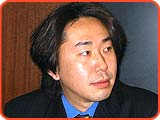
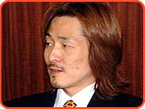

|
 |
 |
|
３．
 １つの番組を作るのに、どれくらいかかったんですか。 １つの番組を作るのに、どれくらいかかったんですか。
［平田］ だいたい１番組に１ヶ月くらいかかりました。企画を通して仕様書を起こしてスタッフが作業に入ったら次の番組の企画を立てて……１年間で30くらいゲームを作っているけれど、大丈夫かな？ もうアイデアがつきたんじゃないかな？と思うほどでした。
［山上］ 各番組を作るという作業が大変だったんですね。だけど、ゲームとしては全体のストーリーが見えてこないと、完成品にはならないんです。ある程度時間が経つと、任天堂の上司も「見せろ」と言ってきます。それで、やむをえず８番組しかできていない途中版を見せたんですよ。そのときに、「これにはストーリーがあって、目的に応じて番組が増えていくんです」と説明したんですが、やはり言葉で説明しても全体像がないとピンとこないんですよね。僕の知らないところで「やめたほうがいいんじゃないか」という意見まであって、一時期怒ったこともありました。「ちゃんと思ったとおりのものができますから、待ってください」と上司を説得していましたね。
［平田］ こちらは１つ１つの番組を作るのに必死でしたから、周囲の事情を考えられる状況ではなかったんです。
制作者としては１つ１つに妥協ができないですよね。そうすると、やはり時間がかかりますよね。
［平田］ ええ、マスターアップの１ヶ月前まで企画書を書いていましたね。
［山上］ 最後の最後には、もうこれ以上絵が入らないということになりました。それなら、いまある絵を使って、なにか番組を作れないかと。それでいくつかゲーム以外の番組を増やしたりしていました。ギリギリまでお客さんが喜ぶものはなんだろう、と考え続けました。ですから、みなさんには最後の最後まで楽しんでいただけると思いますよ。
ユーザー的にはうれしいお話ですね。平田さんがグラフィッカーやプログラマに指示をするうえで意識したことはありますか。
［平田］ 特にはないですね。スタッフが非常に優秀でしたので、気がつくと普通にいいものができあがっている感じでした。
朱雀のスタッフとはもう何年も一緒にゲームを作っているんですか。
［米澤］ いえ、私と平田とプログラマは以前同じ会社にいましたが、あとのスタッフは全員、会社を立ち上げたときに募集したんです。経験者しか募集しなかったんですが、やはり賭けの部分も大きかったですね。でも、たまたまいいスタッフがそろったんですよ。それで、これだけのペースの仕事がこなせたんだと思います。
アドバンスでゲームを作ることは最初から決まっていたんですか。
［米澤］ ソフトを作りはじめたときにはまだアドバンスは出ていなかったんですが、我々の場合はスーパーファミコンの制作の経験がありましたので、その実力をそのまま生かせるだろうと予想をしていました。
［山上］ 任天堂としても、みなさんの経歴を見れば、「この実力のかただったらアドバンスでできるだろう」という判断ができますよね。そういう点でも、今回はこちらが望むところではあったんです。
任天堂側では制作会社の実力は厳しくチェックするんですか。
［山上］ ある程度はチェックしますね。ただ、やはり作ってみないとわからないところがあるんですよ。朱雀さんの場合は、こちらが思っていた以上の実力でしたね。ゲームが完成すると任天堂の社内でデバッグをするんですが、ここ５年来で最もバグの少ないゲームでした。また、ゲーム内容に対する評価も非常に高かったんです。それは、技術力と発想のバランスがとれていたということだと思うんです。そういう意味では、本当にいい会社と出会えたなあと感じています。
|

|
|
 |
|
 |
 |
 |
|
|